The Omega-IS Project Group
Mikael Heimann, Mats Lundälv, Tomas Tjus & Keith E. Nelson
Omega - interactive
sentences
Manual
– main program/lessons
Omega- is
version 1.2
ã
Heimann, Lundälv, Tjus & Nelson,
2004-2006
Topic Dos Hb, Meloton Hb, Tomas Tjus
Psykologbyrå & SuperImpact Images, Inc (USA)
Developed In association with Center for Child & Adolescent Mental Health, University of Bergen, Norway, Department of Psychology, Göteborg University, Sweden, DART, The Queen Silvia Children’s Hospital, Göteborg, Sweden, and Department of Psychology, Penn State University, USA.
Translation: Åsa Mühlenbock and Mats Lundälv
Content
What
is Omega-is?.
1
Getting
started, and what is an appropriate level?
5
Create.
5
B-lessons.
5
D-lessons.
6
F-lessons.
6
H-lessons.
6
J-lessons.
6
L-lessons.
6
Installation..
6
Start
the program...
8
Motivation
and support..
9
Adaptability..
10
Creating
sentences and events.
11
Register
a new user (pupil)
12
Choosing
a lesson..
14
Language
versions.
15
Linguistic
material.
15
Why
tests?.
17
Testing
in the learner (pupil) mode.
18
Testing
in the teacher mode.
18
How
to handle learner/pupil settings.
18
Viewing
results.
19
Analysing
Results.
20
Chapter G: Educational perspectives. 74
MIR
– about our method..
74
The
computer as a linguistic prop.
75
Development
of language skills and teacher –
learner interaction
75
Fundamental
factors.
75
Necessary
factors.
76
Facilitating
factors.
77
L.E.A.R.N:
Some more theory.
77
On
the importance of conversations: recasting
79
Recasting
- how to do it
79
Results
from research..
80
|
A |
Omega-is has been created to stimulate the development of language and communication in learners beginning to explore the mysteries of the written language. What do the letters represent? How can they represent words and events? The language matter of the program is meant to be explored by the learner with help from - and in interaction with – a teacher or parent. The language material and the appended animations do not only offer motivational literacy training but also give occasion for conversations where the learner can express his or her imagination and thoughts
The program consists of two main sections. The lesson section (figures 1 and 2)comes with language and text material where the learner can create events with the help of text buttons. The learner can also test his or her proficiency by first viewing the event, then choosing words and creating the sentence that best represents what he or she has just viewed.
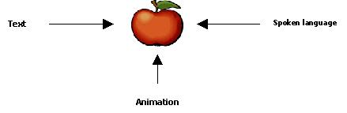Figure 1: Lesson section content
In the editing section, the adult can edit the existing material or create entirely new materials in order to offer the learner an ultimately well-adapted and stimulating learning situation
The multimedia lesson material has been created according to the following structure (figure 2). The language content is represented by text. Having clicked on the word, the learner will hear the word by means of a recorded voice and then view the word as a picture or, if it is a phrase, as an event. Thereby, the learner – in a limited-time window – is given support in three different forms (text, speech, animation) which will facilitate his or her understanding of the concept of lingual representation.
(1) Create:
Text Animated event
(2) Test:
Animated event Text
Figure 2: The program design
After starting up the program, the name of the learner is typed into the name list. Then the learner can start exploring the language material in Create or test his or her reading ability in Test.
Omega-is § includes
an extensive language material: § 29
basic lessons with around 200 words (plus 2 stories and 3 demo
lessons) § provides
sufficient material to create 1936 sentences (plus the content of
stories and demo lessons) § average
level is 3-word s-v-o sentences § most
advanced level is short stories § has
an open design § i.e.
the option to add new language and media material over time § such
additional content will be provided by the developers (on the
Omega-is web site www.omega-is.com),
but may also be added by teachers or parents
How much did I learn, and how much did I know before? These matters can be explored in the Pretest section (See chapter C “Testing in teacher mode”). This means that the learner can find out how much he or she knows before starting to work on a lesson. It also gives the adult working together with the learner an opportunity to establish the appropriate level on which to start working. A rule-of-thumb here is to use 20% correct as a starting point, as the learner should have some previous knowledge as well as the challenge to learn something new. However, this per cent figure should be viewed as a rough measure, since our experience shows that some learners, despite scoring lower than 20% correct on the Pretest, still learn the lesson content. It is important to find balance between the pleasure of the learner in exploring the material and the level of difficulty (a level of too great difficulty will only cause frustration).
The central part of the program is the Create activity. The learner explores the program, getting acquainted with text and how to use new language skills. The contents of the language material:
This section contains one-word material only, the idea being that the learner should understand how the written word represents a concrete object, i. e. only nouns are represented. The simple structure can also make learners who, due to motor disabilities, have difficulties to work on the computer gain insight into how to illustrate a text by clicking. The words have been selected in part because they compel a phonological (audible) and/or orthographical (pictorial) difference , such as two words of great similarity : “Hound, House”.
These consist of two-word sentences with a noun and a verb to illustrate the notion that somebody does something and how simple grammar is built by a subject and a predicate.
Three-word sentences with subject, verb and object (S-V-O). Some words from previous lessons reappear, but there are also new words for additional phonological drilling. Words are sometimes placed according to a strict grammatical order where subject-predicate-object have given columns but sometimes also with nouns only in one column and verbs in another. The selected sentence will always, however, have a grammatically correct structure.
The most common prepositions are represented in order for the learner to explore situational positioning. Use of the genitive is also practised in certain lessons as learners explore phrases with a possessive content (such as “the panda’s table”).
Contain long sentences with added new words. The purpose is reading practice combined with exploring the limits of the learner’s working memory which is important when it comes to reading and comprehending of longer texts. This may also be checked in the testing part if the learner likes this type of challenge.
Using different alternatives, the learner can create his or her own story with different types of principal agents and scenarios, such as “Where is the action going to take place?”, “What is the main character looking for?”, “Who can help?” The purpose here is to give the learner an understanding of how stories are created, to encounter additional complex sentences and to provide the learner with inspiration for writing his or her own stories when not using the program. As a bonus one gets to see one’s own story shown as an animated film
Place the Omega-is CD into your CD-ROM drive. In Windows the installation will normally start automatically. Otherwise; find the CD drive on your system (from “This Computer” in Windows) and open it. Find and start the “Omega-is-1-2-Win-install.exe” file. Installation files for Linux and Mac OS-X are also available on the CD-ROM.
When the installation has started, just follow the instructions on the screen. For instance, you will be able to choose what languages to support.
Note that this is a fairly big installation which will require some time! Count on 5 - 10 minutes to complete the installation.
The program requires 180 MB available space on the hard disc when one language is installed. Every additional language requires approximately an extra 10-15 MB.
The minimum requirement for your computer is the Pentium 3 with 600 MHz and 256 MB RAM. Pentium 4, >800MHz and 512 MB RAM is recommended.
After a successful installation, an Omega-is folder with three new icons (plus an additional folder) will appear on the start menu:
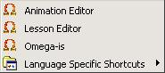
The icons reflect the fact that Omega-is actually consists of three different programs. Two of these (Animation Editor and Lesson Editor) enable the user to edit and customize the program. Changes can be made to existing lessons, or new lessons can be created. Additional information about these features are found in the full manual, and in the help files of the editors (also see our Web pages on www.omega-is.com).
Icon #3 - Omega-is - represents the actual program, the one that gives the learner the opportunity to explore the language in an amusing way. And which gives you as a parent or teacher a new educational tool.
Omega-is will ideally pick up the menu language matching the computer system language setting – if available – otherwise the English version will be started. In the ‘Language Specific Shortcuts’ folder dedicated start-up icons for the supported languages can be found.
Omega-is is currently supporting three user interface languages (English, Swedish and Norwegian), and lesson material in four languages (English, Swedish and Norwegian ‘bokmål’ and ‘nynorsk’). Any installed lesson language may be used regardless of the current user interface language.
|
Quick start: · Double-click on the Omega icon · Select ”Guest” · Select ”Create ...” or ”Test” · Select lesson type and lesson |
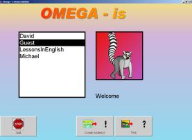 |
When starting up the program the user is
automatically placed in learner or pupil mode, which
enables the learner to start examining the program, either in the
Create Sentences mode (the basic activity offered by the
program), or in the Test mode (testing the skill to interpret
animations and to re-produce it in text).
Trying the program as a
“Guest” gives the user the freedom of doing so without
the results being saved in a specific result file.
Create Sentences enables you to
explore language in a fun-filled and error free way. Single words can
be explored in the B lessons. Simple two and three word sentences are
created and explored in the D and F lessons, and more complex
sentences in the H and J lessons. Short stories may be produced in
the L-lessons.
In this mode, the user selects words (or short
phrases), presented as text buttons, which then are added to a
Sentence Line and spoken.
Whatever the user will do (except for
quitting) a sentence will be created in some odd way. The skill to do
it in the standard way may be gradually developed.
The complete
sentence will be spoken again, and an animation corresponding to the
meaning of the sentence will be presented.
After the animation the
sentence text will be presented again – and the spoken
version and the animation may be repeated once by pressing the Up and
Left arrow keys.
This is the time to discuss the (often more
or less crazy) meaning and illustration of the sentence, an excellent
and natural opportunity for the teacher to stimulate the learner’s
understanding of language, and to encourage conversation and
progress.
Test. If,
instead, the “Test” option is chosen, the learner will
have the opportunity to explore his or her language skills in a game
like way. In this case, the animation is shown initially, whereupon
the learner is to select words or phrases to create the sentence that
best describes what he or she just saw.
When a sentence has been
completed a right/wrong response is presented (in optional ways,
according to the user settings (see Ch. B and C).
When the user
confirms the feedback a new animation, randomly selected from the
sentences/combinations that are available for the selected
lesson.
When all combinations have been presented, or when the
user chooses to quit, a result summary is presented, and then the
user is brought back to the lesson menu.
The above description has presented Test in Learner or pupil mode where it serves as a complement to the “Create Sentences” activity.
There is also a more structured and ambitious Test option in Teacher mode, which contains added “dummy” words, with the purpose of further challenging the learner’s reading comprehension (you arrive at the teacher mode/settings by pressing Ctrl+F2 or Shift+F2 from the initial menu).
Results (e.g. percentage correct, and response time) of all activities are logged and stored in a result file. This may of course be useful for teachers to view and analyse the results and progress of the learner’s activities. Some learners may appreciate the option of being able to challenge themselves by re-taking a test to see whether the score can be improved, or if the score can be maintained in less time (more on test and the result file in ch. C).
Our experience shows that learners improve if an adult is at hand to give positive reinforcement or support when needed, but also as a conversational partner when the learner wants to discuss his or her experiences. It is important, though, that the initiative stays with the learner as the language material is perused. The learner must be driven by his or her own curiosity and delight (more in on this in chapter G).
The program can be operated through either mouse or keyboard (for instance the Space and Enter keys) This opens the possibility also to make additional modifications for learners with varied motor abilities who are in need of 1 or 2 switch input.
|
|
|
B |
Omega-is has been created as a multimedia-based computer tool which puts the learner in the driver’s seat, enabling him or her to examine language in a playful manner. This is the fundamental concept. The learner has the means to examine everything from single words to phrases (sentences) of different complexity up to short stories. This language material is reproduced as text, sound, and as animations. The learner creates illustrated phrases which stimulate the understanding of language and provide motivation towards further discourse and progress.
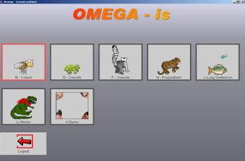
Choosing the level of difficulty (B- to L -lessons) is done by clicking on different animal icons
To add another learner or make changes to the basic program settings, you need to enter the teacher mode by pressing Ctrl+F2 or Shift+F2 (see below). In this mode you have access to the program’s set-up functions, particular teacher-tests and test results (see further ch. C). To register a new student, choose <New Pupil> (see figure 1 below) and type the learner’s name. You will then enter a new dialogue window which enables you to make further adjustments (see figure 2 below).
|
(1) |
|
|
(2) |
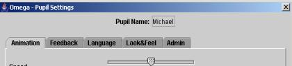 |
Animation and Feedback enables you to alter the speed of the animations. You can also choose to repeat animations and adjust test-exercise feedback (more on this in Ch. C).
Language: This is where you select what language the learner should be working with. Choices here depend on what languages have been installed (available choices on the set-up CD are English (British), Swedish, and two versions of Norwegian.
Look&Feel: Adjustments can be made to individualise button features, text, background and the screen. In addition, you can also adjust size and contrast for optimal personalization. Details concerning keyboard features can also be adjusted: Space for selecting and Enter for executing the choice made.
Admin: A picture/photo of the learner can be linked into this feature. This picture will be shown every time the learner starts to work with the program (please note that the picture needs to be stored in the jpeg format!). With “Admin”, you can also erase previous learners/pupils and any adjustments (learner data stored in a result file must be erased manually).
After completed registration and adjustments, the learner can start to create his or her own events (sentences). Again use the commando Ctrl+F2 or Shift+F2 to re-enter the Learner or Pupil Mode and choose Create sentences.
The program contains a large number of complete lessons, giving the learner the means to explore language and written text based on his or her own skills and motivation.
B lessons make up the first and least complex level. Singular words are explored, i.e. the learner clicks on the word, then sees the written word appear again, hears the spoken word and finally views the image. To move on to another word, the learner clicks on the text below the image. There are four complete B lessons containing a total of 29 unique words.
|
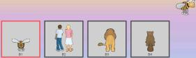 |
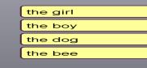 |
|
The four B-lessons |
Words in lesson B1 |
D lessons. Words are put together in pairs – an agent plus an event or object. Examples of events that can be created are ”The girl swings” and “The squirrel dances.” Three lessons are included (D1, D2 and D3), offering the means to create 81 different sentences/events.
F lessons. The F level provides the means to write three-word sentences consisting of an agent/subject, a verb, and an object (s-v-o). The initial phrases contain only two nouns and a verb, thus offering the learner a chance to understand how things work at this level without too many disturbing options. There are a total number of 12 different F lessons with the possibility to create 205 linguistic events.
H lessons. The H level consists of five lessons, where, among other things, prepositions and positional attribution can be practiced. Directional concepts such as “looking out from”, “looking into,” and “jumping out of” are also examined. The genitive appears in some of the H lessons, letting the learner work with phrases with possessive content (such as “the panda’s table”). Sentences are now longer and more complex, putting a considerably higher demand on the learner’s linguistic ability, motivation and working memory. A total of 951 phrases/events can be created at the H level.
J lessons. The J level contains five lessons, including, among other concepts, adjectives and conjunctions. Phrases are now divided into text buttons (see the figure below), providing a number of combination alternatives, and the learner is now approaching a “conventional” manner of writing. The purpose with these lessons is to let the learner practice his or her ability to examine more complex linguistic material, something which, hopefully, will lead up to the creation of stories (L lessons). Additionally, the learner is given the opportunity to work with sentences where the actors express feelings (“the happy...” and “the frightened...”). J lessons involve increased drilling of the working memory, owing to the increased amount of information that has to be processed by the learner. A total of 699 phrases/events can be created in the different J lessons.
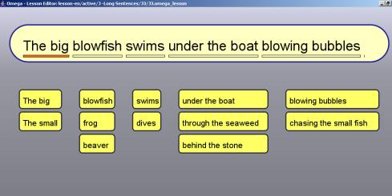
A complex phrase at the J level (lesson J3)
L lessons. On this level, there are two lessons where the learner can create a longer story by combining different phrases. The phrases provide the means to decide who should be the main agent, what he or she should be doing, and in what context the action is taking place. Thus, the learner can create different versions of the same basic story. The purpose is to stimulate the learner’s imagination into creating his or her own stories! The story created can be read aloud and/or replayed and printed. It can also be saved to be repeated at a later time.
The existing version of Omega-is presents the possibility to work in three different languages: Swedish, Norwegian and British English. These three languages can be installed separately or as a combination. If more than one language is being installed, choose “Language” in the Settings Menu (press Ctrl+F2 or Shift+F2 for the teacher mode). These options must be set for each learner individually. Thus, it is possible to have a learner work with Omega exercises in both the Swedish and English versions.
The basic material in lessons B1 through H5 contains 147 unique words. In addition, there are the words included in the L-level stories and the supplemental demo lessons. More specifically the program contains 33 different verbs, 81 nouns, 14 prepositions (for example behind, beside, over, on, under, in front of, through, and in), 12 adjectives (for example blond, redheaded, and small), 2 adverbs (slowly and quickly), one conjunction (and), one definite article (the), one pronoun and two indefinite articles (a/an).
This language material (lessons B to J) makes it possible to create a total number of 1936 events (sentences), L-level and demo lesson material excluded. Many more events can be explored in the story (L-level) and demo lessons.
How
to work with Omega-is
– an example
Imagine the following scenario: John, a pupil with an autism-spectrum disorder is going to test the program. John has shown an interest in words, and his teacher finds that Omega-is might be a method worth trying. John is estimated to have approximately the language level of a five-to-six-year-old.
To get started:
1. Start the program
2. Press Ctrl+F2 or Shift+F2 to enter settings in teacher mode.
3. Choose <New pupil> and enter the learner’s name. You now have the following options:
Animation: Choose whether animations should be repeated, whether a complete phrase should be marked with a sound and an animation speed.
Feedback: In test mode, the type of feedback desired can be set for correct/false answers. Feedback can be given as sounds, text, animations or film sequences. The desired frequency of feedback can also be set.
Language: Choose language (Swedish, Norwegian or British English) depending on what languages have been installed.
Look & feel. The colour scheme can be adjusted, thereby creating a feeling of a unique environment for each pupil.
Admin. The teacher can link to a picture of the pupil or alternatively erase the information contained in the settings for a particular student.
4. After settings have been completed, you will re-enter the teacher mode. You may either choose test or go straight to the lessons section. In the case of John, the teacher chose to test at the two-word-level (D lessons). Click on Test and choose pretest 1.
5. John completes pretest 1 for lesson D1. His score is two correct phrases out of nine (22.2% correct, which is logged into his result file, accessible through the Result icon).
The time has come for John himself to give the program a try. Pressing Ctrl/Shift+F2 keys will take you back to the learner or pupil mode.
· (Please note that there are test options here as well. Tests in learner or pupil mode are chosen at random, while tests in the teacher mode contain a preset number of phrases. Posttests in the teacher mode also contain so-called dummy words, i.e. words that are phonologically or semantically similar to the words tested.)
7. John may now work with the D lessons.
8. When John has worked his way through all of the D lessons and tried the tests in learner mode, the teacher chooses to test John again with the preset tests. By pressing Ctrl/Shift+F2 you will once again be back in the teacher mode.
John completes posttest 1 and scores 80% correct. The teacher decides to end the lesson and the program is closed down.
|
C |
|
|
The test function in Omega-is makes it possible to find out how much a learner understands from the linguistic material in any given lesson. The animations are shown initially, and the learner, by clicking on the text icons, creates a phrase which describes the action. The test can be run in two modes; the teacher mode and the learner mode. In the teacher mode, the contents are predefined, while in the learner or pupil mode, tests are generated at random. Furthermore, the teacher mode contains both pre- and posttests for measuring and analyzing the effects on language skills and reading comprehension when the linguistic material has been explored by the learner.
In this mode, the learner’s ability to express/recreate animated events in text form is challenged in a fun way. By observing the learner’s results in these exercises, the teacher can form an opinion about the appropriate level for the learner to work on. The learner-mode tests contain linguistic material identical to the Create lessons, and the exercises are chosen from the lessons at random. If the learner solves no more than 20-30% of the exercises, this suggests that the lesson material should be surveyed (see p. 2). This hint comes out of our own experience, but the final decision can only be taken by the teacher/parent who knows the pupil, since learners’ needs of security and challenge can vary a great deal.
“Results” from the test-exercises, as well as activities in the Create exercises, are stored and can be analyzed at a later time by a teacher. Read more about the handling of results and about testing in the teacher mode in the section below.
To test in the teacher mode, press Ctrl/Shift+F2. Then click on Test. In the teacher mode there are two pretests and two posttests to choose from. These tests contain more detailed information in regard to the learner’s results compared to the test in the learner mode. Furthermore, there are alternative words (dummy words) which are meant to challenge the learner’s reading comprehension both semantically (in regard to content, as in car/bus) and phonologically (in regard to that which is heard, as in car/cart).
Before starting a teacher-mode test, the learner’s name must be entered and the necessary settings must be made (see next section).
In the so-called teacher mode (Ctrl/Shift+F2), the program settings, teacher tests and test results are available. In this mode, a new pupil can be added or basic settings of the program be changed (see ch. B). To register a new learner, choose (1) <New pupil> and type in the learner’s name. You will then enter a new dialogue box (2).
|
(1) |
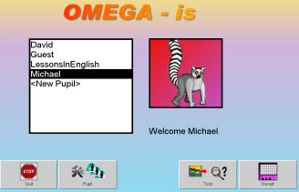 |
|
(2) |
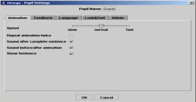 |
Animation offers the possibility to choose animation speed by clicking on the speed-control bar (slow-normal-fast). Additionally, you may choose whether to have the animation shown twice and whether to have a sound effect when the sentence has been completed, as well as before the animation. Finally, you have the option of having the phrase shown in writing after animation for additional reinforcement of the animation content.
Feedback. When testing reading comprehension, different forms of feedback can be chosen for correct and false answers respectively. Feedback can be given as text, speech, pictures and film clips. You may also choose between pictures and films within the Omega-is files. Finally, the feedback frequency can be set with the control bar.
Access to personal files is also controlled by the “Set” buttons. This allows for using unique sounds, pictures or film sequences as feedback files. This program feature gives you the option of additional individualization.
Language: Choose the language in which the pupil should work. Choices depend on languages selected during installation (available languages on the Omega-is 1.0 installation CD are English (Br.), Swedish and Norwegian).
Look & feel. Here, you may adjust button, text, background and screen features. This means that every learner may give the program his or her own personalized appearance. Additionally, size and contrast can be adjusted for optimal individualization.
|
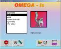 |
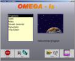 |
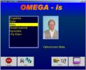 |
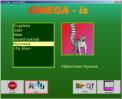 |
|
Colour theme (Default) |
Option 1 |
Option 2 |
Option 3 |
|
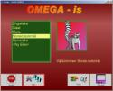 |
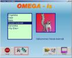 |
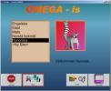 |
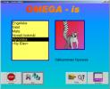 |
|
Option 4 |
Option 5 |
Option 6 |
Example: user defined |
The pictures above show examples of basic settings or options (“colour themes”) that may be selected, and an example of an individual colour theme. There are four different setting options under “change colour”. This feature enables the user to adjust the program image at log-in, lesson choice and creation of phrases and stories.
Finally, under Look & feel, the space key function may be adjusted. There are two alternatives: “select next” or “activate selected”.
Admin: Here, you may link to a picture of the learner (“set pupil image”). This picture (must be in jpg-format) will then be shown every time the pupil logs in and starts to work with the program. Under Admin, you may also erase a registered learner.
After registration has been completed and any adjustments of the settings have been made, the learner can begin to explore the program. Again use the command Ctrl/Shift+F2 to return to the learner or pupil mode.
If the adult wishes to study the learner’s results, this can be done in the so-called teacher mode: Press Ctrl/Shift+F2 in the start menu. Then click on the icon named Result. Initially, an overview of the tests the learner in question has taken will be shown, including rather extensive information about test types, how much time was spent taking them, answer time, etc (see figure below).
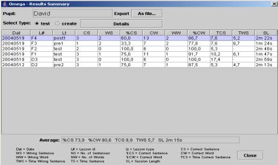
Results: Test-level 1
Should additional information (such as what type of grammatical errors the learner makes) be requested, click on the Details button, and level 2 will be displayed (see figure below). In addition to the percentage of correct words and phrases, the exact test phrases and the pupils’ answers are shown. We gather from the figure that the learner is completely correct about the first two phrases, but is incorrect about the object in the third phrase. In addition, the answer time is given for every single word.
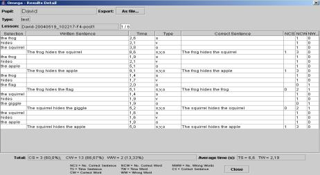
Results: Test-level 2
Please observe that the result function in Omega-is also offers the possibility to view what the learner has accomplished in the Create mode. Choose “Create” under “Select type” (see picture for Result: Test-level 1).
By analysing results in detail, the parent or teacher can find out whether the learner is improving his or her reading comprehension and also whether there is a word in any phrase which is easier or more difficult to read. This makes it possible to systematically examine any difficulties and whether these relate to certain word classes being more difficult to the learner. For instance, one study revealed that the object form was the most difficult to children with autism, something which in turn may provide the basis for further drilling or examination (Tjus and Strid, 2000). Teachers also have reported that some learners, though giving answers at a slower pace, have more correct answers, indicating that the children have become more thorough in their work. Other children give their answers both quicker and with a heightened confidence (Tjus et al., 1998). However, the interpretation of the results relies entirely on one’s knowledge about how the individual learner functions, and a visual examination will be sufficient in most cases.
For those who wish to do a larger study of the learners’ test results, the results can be exported into Excel (or another spread sheet program) or to a statistical program for further analysis. By clicking on the button *“As file...” at “Export”*, a dialogue box will be opened. Name the file and select where to save it. The file can then be opened/imported as a text file from within Excel or a similar program.
|
G |
|
|
The three letters M+I+R in many ways cover the working method proven to be the most successful. M stands for “Multimedia” and sums up the potential and possibilities provided by technology; I stands for “Interaction” and emphasizes the importance of an adult conversation partner being present as often as possible; R stands for “Recasting” and indicates the use of a special conversation strategy.
Since 1990, several studies conducted at Göteborg University, Sweden, have explored how the use of a multimedia based method may help learners with diverse linguistic disabilities develop their language skills (Tjus, 1998). The strategy we have used (the MIR method) is based upon three equally important elements.
1. Multimedia: In our research, we have operated with three different programs, Omega-is being the most recent and complete, although all programs have been founded on similar principles. These programs give the learner the means to create motivating and interesting events on the computer screen.
2. Interaction: Although the learner is sitting at a computer, interaction with the teacher is still a central feature. The goings-on on the screen provide the users with topics for conversation. The adult should, however, give as few cues as possible in favour of functioning as a helper and a source of inspiration to the learner.
3. Recasting: This is a well-known but underestimated strategy, which too seldom is used in a purposeful way. Several researchers (see Tjus, 1998 for a detailed review) have showed that learners learn new language concepts quicker if the adult recasts the learner’s words. This is, in itself, a rather uncomplicated strategy: You change the linguistic style without distorting the essence of the learner’s statements. Experience shows that there are more advantages to this technique than simply imitating the learner. One will maintain the same focus on the learner’s utterances, one adjusts to the learner’s pace and level, and the dialogue becomes more varied and genuine. Results from several studies give uniform evidence that a dialogue based upon these principles may have a distinctly positive effect on the development of language skills.
This model has been tested in several projects in Sweden during the 1990’s with several groups of pupils (such as children with autism, multiple handicaps, and children with dyslexia). Results have, so far, been positive. Most learners - and this most certainly goes for the group of children with autism – have improved their reading skills, their communicative skills or their linguistic awareness (Heimann, Nelson, Tjus and Gillberg, 1995; Tjus et al., 2001). More broadly, research in the United States and Belgium as well as Sweden have demonstrated that Multimedia + Interaction + Recasting (MIR) approaches can support both literacy and basic language skills in ordinary children, deaf children, children with autism and children with multiple special needs.
From today’s research-based knowledge in education, psychology, and linguistics, it is possible to compile a number of conditions that strongly affect the normal language development of children (Heimann and Tjus, 1997). These conditions can, in basic terms, be divided into three groups: necessary, facilitating, and fundamental factors.
For each of these domains, examples of a few of the most important factors are given below. All fundamental factors contribute to the child’s language development and will to communicate - a capability which takes an important step forward when the child at the end of the first year of life enters the world of spoken language. Regarding the necessary factors, they all have to be available for the language to develop normally, while, concerning the facilitating factors, the more of them that are present, the better!
Most of the fundamental factors usually being discussed have been taken from our knowledge of infant development. Today, we know that the embryo of our linguistic and communicative skills is present at birth. What takes place during the first year of life has, in other words, consequences for the linguistic development of the young learner. Early capabilities, supposed to be important to linguistic development are (adopted from Heimann and Tjus, 1997, pp. 56-57):
Imitation. Infants imitate facial expressions (such as a happy or sad face) and facial gestures (such as mouth opening and tongue protrusion) already at birth
Mother’s voice. The infant recognizes its mother’s voice even before birth. The infant can also recognize stories and rhymes that its mother has read to it during the last trimester
Sucking. The infant’s sucking pattern depends on how hungry it is. When an infant is lying at its mother’s breast, most exhibit a sucking pattern of intensive sucking interspersed with pausing. A mother will spontaneously and intuitively use this pattern to develop her baby’s ability to take turns, often by simply talking to the infant during pauses.
Turn-taking. Infants also seem to possess a completely innate ability to take turns in “talking” to the adult. If the mother or father only gives the baby time – infants need more time to answer – lengthy dialogues can develop. Such dialogues have also been observed between premature babies and their parents.
Mother-infant interactions over time: It is important to the infant to have the possibility to continuously and consequently develop both its interaction and communication skills during its first year of life
Eye contact. The fundamental ability to maintain eye contact is present already at birth, but it also quickly develops during the first months of life. Eye contact is an enormously important part of early contact and early interactions between infant and parents.
A secure relationship. Our initial experience of the importance of communication and our initial experience of how important we are in the eyes of the world around us is given within our initial relationship. The foundation for this is built during the first year of life
Joint attention. Around 8-9 months of age, one notices the first signs of the infant’s ability for joint attention (as when the nine-month-old infant and its mother play with a toy and alternately look at each other and the toy). This ability is also connected to early communicative gestures (for example, pointing at something) and has proven to be a basic element for later linguistic and cognitive development
(see Heimann & Tjus, 1997; Nelson, Loncke & Camarata, 1993)
One competent partner. Sufficient dialogue episodes with one skilled partner (this person is typically an adult having a significant higher lingual competence than the learner).
A sufficient numer of episodes. The learner must be given sufficient opportunities to interact and experience conversations with others whose language is both fluent and varied.
Motivating conversations. Interactions and conversations that are both motivational and socially interesting to the learner, and where the learner is given the chance to participate according to his or her ability.
Use of intact abilities. That the learner, in conversation, is given the opportunity to use biologically intact senses. For example, that profoundly deaf children are allowed to communicate through signing.
Challenging conversations. That the learner at some points experiences a manner of communication that challenges the limits of his or her current linguistic system.
A few facilitating factors are exemplified below.
Many modalities. Receiving language input and experience through as many modalities as possible (for instance speech, text and sign language). Simultaneously viewing a text, hearing it and also having it translated into sign language gives the learner more opportunities to understand and analyse relevant language content.
Many challenges. Conversations that often challenge the learner’s language comprehension and level of development give the learner extra stimulus and opportunities to discover new language structures as well as new ways of maintaining a conversation. One group of children at risk of not being taken seriously where language is concerned is multi-handicapped children who can perhaps express their own thoughts only through computers or a so-called BLISS-board (by means of using signs and symbols). This often leads to a slow conversation process, with short, clear-cut messages. Unfortunately, sometimes the obstacles caused by the motor handicap, together with the limitations presented by the computer or BLISS-board, cause others to believe that the child understands no more than he or she is able to produce.
Flexible adjustment. That the person or persons who talk to the learner use several different means to make concepts or events understandable. This means that the adult modifies the speed as well as the complexity of the spoken language to suit the learner’s present motivation, concentration and ability. It also includes the use of different means to make information redundant. This could mean describing the same event in several different ways, or using other modes of expression (such as drawing or singing) to increase the learner’s ability to understand.
Individual credit. The language spoken by the important adults surrounding the learner should be modified to suit the learner’s personality, way of thinking (cognition) and social style. This is important because it acknowledges the learner as a separate individual with unique interests and needs. Even though much can be gained by studying literature on the subject of talking to children with autism, one must never forget that there is no one way to relate to children diagnosed with autism. These children, along with all normal children and all children with disabilities, are different and must be met as unique individuals.
Heimann and Tjus (1997) are of the opinion – as are Nelson, Loncke and Camarata (1993) - that if as many as possible of the factors listed above are present, the probability increases that the learner is placed in a favourable learning situation where the learner’s brain/cognitive system is given a chance to absorb and analyse vital information. Thus, the learner has a better chance of actually learning something new, for instance a new linguistic form that he or she has not mastered before. According to Heimann and Tjus (pp. 60-61; authors transl.):
A child must not be viewed as a biological computer to be fed with certain pieces of information. The child is a whole human being with human needs! Thus, learning neither occurs exclusively at school nor happens in a situation where learning factors (such as aptitude, memory and attentiveness) can be viewed as disengaged from the social situation (the child’s emotional life, interests, self-confidence or previous history).
Here is a description of a somewhat different way of looking at learning. This is a way, which in our mind, can contribute to new ways of thinking in matters concerning teaching set-up and procedure. The great advantage – in our opinion – with our theoretical take on learning is that this theory focuses not only on the learner’s abilities or inabilities, but instead attempts a comprehensive view on learning
The theory upon which our reasoning is based – rare event learning (REL) – is geared towards identifying and more thoroughly describing factors that are either necessary for learning to take place, or in one way or another facilitates learning (Tjus, 1998; Nelson et al., 2001). These factors are not easily identifiable in the classroom, but an increased awareness about them will hopefully improve chances of creating a learning situation and a classroom climate that maximizes the learners’ opportunities to absorb new information. This view may require emphasis to an even greater extent for children with different forms of learning disabilities, since they, in contrast to healthy children, have fewer intact psychological (such as memory, language capability, concept building) and biological (such as sight, hearing, sensory and motor control) systems to employ.
The theory brings up five fundamental aspects that are important to consider when creating a positive learning climate. All of them describe, in different ways, how the learner’s learning is guided by his or her ability to think, analyse, emotionally regulate and concentrate. But - and this is important – this theory is more encompassing than this, since it involves more than the usual cognitive conditions by emphasizing the importance of motivation, interest, feelings and the interaction between learner and teacher. Learning always occurs in a larger context. Moreover, within context these multiple learning conditions need to dynamically co-occur and converge--thus the more recent labelling of the Rare Event Learning model as a model of Dynamic Tricky Mixes (Nelson, 2001; Nelson et al., 2001; Nelson, Craven, Xuan, and Arkenberg, 2004). It is complicated or "tricky" to find the "right" Dynamic Mix that leads to rapid learning for an individual. But when found these individualized learning mixes may lead to highly productive cycles across many learning occasions with increasingly positive engagement and enjoyment by both child and teacher.
In short, the main content of the REL model can be described by using the acronym L.E.A.R.N (Nelson et al., 2001; Tjus & Heimann, 2001):
Launching conditions include cognitive factors such as the learner’s ability to attend to new and challenging structures that are experienced within a verbal dialogue. It has to do with how prepared the learner is to learn new things, how able he or she is to capture relevant information and how easily those new structures are encoded into the learner’s long-term memory. In addition, the teacher may have too high or too low initial expectations of the learner's learning potential and thus create a setting in which the learner feels uncomfortable and/or unmotivated. It is usually difficult to decide what particular levels or zones of challenge are needed to allow optimal processing and learning by a pupil at a particular stage of acquisition in speech and text.
Enhancing conditions might include catalysts such as recasts: The teacher reformulates the children's utterances into new syntactic packages, keeps the central meaning but may add something, as in the following illustration
Child: "There is a dog."
Adult: "Yes, there is a dog and it is big, isn’t it?"
Adjustment processes include factors such as support from the teacher to the students to overcome frustration and positive reinforcement of the children's self-esteem. This part of the teaching process is particularly important since children with learning disabilities are at high risk for developing associated emotional and adaptive disorders that might contribute to emotional obstacles within the learning process. Poorer self-concepts (general and academic) and lowered expectations have been noted as possible negative outcomes.
Readiness conditions are illustrated by the children's level of functioning and their interest, knowledge and motivation for learning. Thus, assessment of various cognitive abilities is needed before the aims of training are decided. This is extremely important for children with autism since it has been found that (1) communicative language and (2) cognitive levels are the factors that best predict future progress. In addition children with disabilities often have problems with self-regulatory strategies that might lead to a lack of checking, planning, and monitoring. They often have difficulties with detecting relevant details and they seldom modify their strategy even after several rounds of negative feedback.
Network representations. When new language material becomes well rehearsed and well-integrated within existing knowledge, new and efficient representations are formed. As a consequence, allocation of processing energy becomes more sufficient. For example, a good reader must be capable of parallel processing since reading a story requires considerable energy to keep track of all the lexical, syntactic, and discourse information comprising a story. A poor reader usually spends too much time and energy on letter identification which often interferes seriously with higher skills such as comprehension of the text material. Multimedia materials of the type we have used support parallel processing of more than one structural comparison.
In addition to LEARN, there are a number of additional processes that take a central position in our understanding of the learning process of children (Nelson, 2001; Nelson et al., 2001, 2004). Some of these are briefly described below:
Engagement. The learner’s cognitive system must be engaged in the on going learning process. Language learners continuously compare new linguistic forms with the language they already master. We are referring to mainly subconscious cognitive and linguistic processes. When the brain (the cognitive-linguistic system) observes a difference, the discrepancy is examined by these subconscious processes. When the discrepancy has been observed and examined a sufficient number of times, the learner develops a new language skill and is from that moment on able to understand and use the new structure.
Memory. As new and unknown lingual expressions appear, these are compared to examples already stored in existing memory structures. The memory is, however, not like a tape recorder storing everything without any distinction. The learner primarily observes certain very obvious and easily identifiable examples.
Consolidation. When the learner possesses full mastery of a new skill, such as being able to use a new language structure without difficulty, his or her nervous system no longer needs to pay attention to it. In other words, the brain can at this point just let go of this specific linguistic form and instead begin to focus upon new forms that have not yet been completely mastered by the learner. This process is chiefly, if not completely, subconscious. The learner’s interest in different matters also, in part, determines what is paid attention to.
Integration. The brains of children are actively looking for patterns and connections to tie different areas of knowledge together. The recently acquired knowledge is tied together with previous knowledge, and broad patterns of experience are created. This tendency towards integration is present in all human beings and works as an important prop to learning.
Keith Nelson, an American researcher who has studied early language development since the 70’s is also one of the co-founders of the Omega-is program. He stresses the fact that common conversation, the dialogue between teacher and learner, is a resource rather seldom used in regular teaching. Dialogue is all too often an act where the teacher administers orders or reprimands or in other ways is at the head of the interaction. Conversations too seldom focus for extended periods on what the learner actually says or direct his or her attention towards. Yes, even when the teacher actually is trying to get the learner’s message, it all too often happens that the teacher answers too soon or on a too advanced language level.
How can one, as a teacher or a parent, reduce one’s own pace, one’s own demands on performance, and start listening to the learner instead? Two strategies often used in research studies as well as in educational praxis is to either imitate the learner or try to recast what he or she just said. These strategies are briefly described below, even though it is the recasting strategy that we primarily recommend when working with Omega-is (from Heimann and Tjus, 1997):
· Imitation. One language training strategy often used - especially in the US and in England – is to have the children imitate words and phrases selected by the teacher as especially important in regard to the development of the children. But imitation may also be used to facilitate conversation and interaction between teacher and learner. In infant psychology, this has been obvious for a long time: parents who don’t succeed in establishing eye contact with their baby can get a better understanding of the interaction by imitating the infant for a short wile, thereby giving the infant a better opportunity to participate. Imitating forces you to focus on your partner, to adjust to his or her pace, thereby giving the “weaker party” room to claim more space in the dialogue.
· Recasting. This is an undervalued strategy, too seldom used in a deliberate manner. The strategy is quite simple: The teacher changes the language form without altering the core message in what the learner has said. Studies show that this technique has more advantages than simply imitating the learner. One gets the same focus on what the learner has said, one adjusts to the learner’s pace and level, and the dialogue becomes more varied and genuine. There is unequivocal evidence that a consistent teacher-learner dialogue of this type speeds up the pace of learning (Nelson et al., 2001).
We refer to Heimann and Tjus (1997) in the following brief description of how to work with the recasting method: The condition being that a conversation situation and dialogue is established around the work at hand (such as an Omega-is lesson). The teacher/parent tries to answer questions, ask, comment, expand and recast the dialogue. The dialogue is supposed to help the learner understand the meaning of the words and phrases he or she is currently working with:
· Step 1. It is important that the teacher or parent is sensitive to the learner’s spontaneous comments and finds an unaffected manner in which to use the strategy (every remark from the learner cannot be recasted; if so, the method is at risk of becoming absurd). Let’s assume that the teacher and the learner are discussing wild animals, watching an Omega-is lesson containing pictures and film clips of different animals and that the learner remarks “I like the big tiger”.
· Step 2. The teacher must now make good use of the central content of the learner’s remark and quickly recast it, giving it a partly different structure without changing the meaning to any large extent. One way of doing so might be saying, “Yes, it’s a nice and big tiger” or “I like the tiger, too”. An alternative to recasting is helping the learner elaborate by asking, “Why do you like it?”
· Step 3. As a final link, it may sometimes be convenient to follow up on the remark in step 2 by trying to direct the learner’s attention towards the text shown on the computer screen. This can be done by asking something like, “Where’s the word?” or by pointing out: “Here’s the word! Look: Tiger”.
Many attempts at using computers in the education of children with language problems have been made since the early 1970s. In our own experiments we have worked with several different groups of children (such as children with cerebral palsy, hearing disabilities, ADD/ADHD), but the particular group that the larger part of our experience stems from consists of children with autism. The use of the computer as a teaching aid has been under much discussion in regard to this particular group; it has taken a long time for the computer to become an established device for these children. Today, several different studies show that the computer can be very useful to children with autism, as to children with other linguistic and communication disabilities. Children with autism can learn to read and count with the help of adapted computer programs, and computerized education can even make them learn more than they would do in traditional education directed at children with autism (Jordan and Powell, 1990; Tjus, Heimann and Nelson, 1998, 2001). Recently, two studies from Spain show similar positive results from a group of children with mixed developmental disabilities (Basil and Reyes, 2003; Reyes, Basil and Rosell, 2000).
The most extensive account of research results is to be found in Tjus’ doctoral dissertation from 1998, but Tjus and Heimann (2001) also give a summary of results reached during their initial seven years of research. For additional information we recommend the attached bibliography and a visit to our web page www.omega-is.com.
Even though all of the groups of children included in our research have, for the most part, improved on their reading skills, the strongest and most obvious effects have generally been observed within the group of children with autism. In previous studies using the computer program preceding Omega-is (DeltaMessages; Nelson and Heimann, 1995), 52 children were included; 37 of these improved their reading skills. In other words, working with the computer had a positive effect on the reading skills of over 70 per cent of the participating pupils. For children with autism, a corresponding individual analysis shows that 10 out of 13 children (=77 per cent) improved their literacy skills with our method. It is worth noticing that the total duration of intervention was only between two and four months. During this period of time, the children worked twice a week with the program (every session being about 20 minutes long, and the teachers were instructed to use the described MIR strategy).
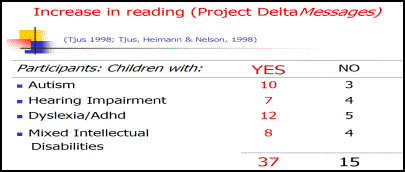
Basil, C. & Reyes, S. (2003). Acquisition of literacy skills by children with severe disability. Child language teaching and therapy, 19 (1), 27-48.
Heimann, M., Nelson, K.E., Tjus, T., Gillberg, C. (1995). Increasing reading and communication skills in children with autism through an interactive multimedia computer program. Journal of Autism and Developmental Disorders, 25 (5): 459-480.
Heimann, M., Tjus, T. (1997). Datorer och barn med autism. Stockholm: Natur och Kultur.
Jordan, R. & Powell, S. (1990). Improving thinking in autistic children using computer presented activities. Communication, 24 (March), 23-25.
Nelson, K.E. & Heimann, M. (1995). DeltaMessages 2.0 - a multimedia software for language learning. Distribution: Super Impact Images Inc., USA och Topic Data- och Språkbehandling HB, Göteborg. (© Keith Nelson & Mikael Heimann).
Nelson, K.E., Heimann, M. & Tjus, T. (1997). Theoretical and Applied Insights from Multimedia Facilitation of Communication Skills in Children with Autism, Deaf Children, and Children with Other Disabilities. In Lauren. B. Adamson & Mary Ann Romski (Eds.), Communication and Language Acquisition: Discoveries from Atypical Development (pp.295-325) Baltimore: Paul Brookes Publishers.
Nelson, K.E., Loncke, F. & Camarata, S. (1993). Implications of research on deaf and hearing children’s language learning. In M. Marschark & D. Clark (Ed.). Psychological perspectives on deafness. Hilsdale, NJ: Erlbaum.
Nelson, K.E., Welsh, J., Camarata, S., Tjus, T. & Heimann, M. (2001) A Rare Event Transactional Model of Tricky Mix Conditions Contributing to Language Acquisition and Varied Communicative Delays. In K.E. Nelson, A. Koc, & C. Johnson (Eds.), Children’s Language, Volume 11. Mahwah, NJ: Erlbaum.
Nelson, K. E. (2001). Dynamic tricky mix theory suggests multiple analyzed pathways (MAPS) as an intervention approach for children with autism and other language delays. In S. von Tetzchner & J. Clibbens (Eds.), Understanding the theoretical and methodological bases of augmentative and alternative communication (pp. 141-159). Toronto: International Society for Augmentative and Alternative Communication.
Nelson, K. E., Craven, P. L., Xuan, Y. Z., & Arkenberg, M. (2004). Acquiring art, spoken language, sign language, and text: Developmental and evolutionary observations from a Dynamic Tricky Mix theoretical perspective. In P. Bauer, J. Hudson, R. Fivush, & J. Lucariello (Eds.), The Mediated Mind: Essays in Honor of Katherine Nelson. Hillsdale, NJ: Erlbaum.
Nilheim, K., Heimann, M. & Tjus, T. (2002). Datorn som pedagogiskt hjälpmedel för barn med autism: En attitydundersökning bland föräldrar och personal vid Rebeckaskolan. Rapport från Psykologiska institutionen, Göteborgs Universitet, nr 1.
Reyes, S., Basil, C. & Rosell, C. (2000). Avalució del programa multimedia Delta per l’aprentatge de la lectura l’escriptura en alumnes amb discapacitas: una experiència d’ensenyament autoiniciat i motivador. supports, 4 (1), 51-65 [in Spanish].
Thorsell, A.M. (2002). Datorn som pedagogiskt hjälpmedel vid läsinlärning – en studie fokuserad främst på barn med autism [The computer as a tool for reading support – a study on children with autism]. Psykologexamensuppsats, Göteborgs universitet. [Master thesis, Dept. of Psychology, Göteborg University, Sweden]
Tjus, T. (1998). Language and literacy acquisition in children with developmental and learning disabilities. Doktorsavhandling, Psykologiska institutionen, Göteborgs universitet.
Tjus, T., Heimann, M. & Lundälv, M. (2003, Nov). Multimedia enhancement of language and reading skills. Paper presented at Autisme Europe, Lissabon.
Tjus, T. & Heimann, M. (2000) Language, multimedia and communication for children with autism– searching for the right combination. In S. Powell(Ed.), Helping children with autism to learn (pp. 78-93). London: Fulton publishers.
Tjus, T., Heimann, M., Nelson, K.E. (1998). Gains in literacy through the use of a specially developed multimedia computer strategy: Positive findings from thirteen children with autism.(1998). Autism , (2), 139-156.
Tjus, T., Heimann, M. & Nelson, K.E (2001). Interaction patterns between children and their teachers when using a specific multimedia and communication strategy: Observations from children with autism and mixed handicaps. Autism, (5), 175-188.
Tjus, T & Strid, K. (2000). Positive changes in syntactical reading errors in children with autism after multimedia training. Paper presented at the XXVII International Congress of Psychology 23-28 juli 2000, Stockholm, Sverige.
Mikael Heimann, Mats Lundälv, Tomas Tjus and Keith E. Nelson
Programming:
Lars Nordberg – Femtio Procent Data AB, and Bengt Farre – Androtech HB
Animations
Mats Lundälv and Cathy Agostinelli
Graphics
Maria Olsson, Tommy Hagman, Oscar Elmgren, Lisa Wikberg, Marcus Anderberg, Daniel Sköld, Tomas Abrahamsson, Carina Fihn and Jill Lindström.
Sound work
Mats, Linnéa, Emma and Jakob Lundälv and Brian Holmedal
Languages
Katarina Mühlenbock (SE), Stine Laberg (NO), Elin Styve (NO),
Rebecca Heimann (NO) and Mirja Turestedt (SE, UK)
Web page
Mattias Twedmark
Omega-is has been developed with support from
Sweden: The Handicap Institute, Vinnova/KFI, Center for Autism, Göteborg, Institute of Special Education, Göteborg, and DART/ The Queen Silvia Children’s Hospital, Gothenburg
Norway: Center for Child & Adolescent Mental Health, University of Bergen and the Meltzer foundation, Bergen.
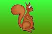
Information on how to order this program will be obtained from
Sweden: Topic Dos Hb
Barnhusgatan 13, SE 411 11 Göteborg, Sweden
Email: topic@telia.com
Norway: Center for Child & Adolescent Mental Health
University of Bergen, P.O. Box 7800
NO-5020 Bergen, Norway
Email: post@rbup.uib.no
USA: Super Impact Images Inc.
c/o Nelson, Warriors Mark, PA 16877
Email: Keith.Nelson@psu.edu